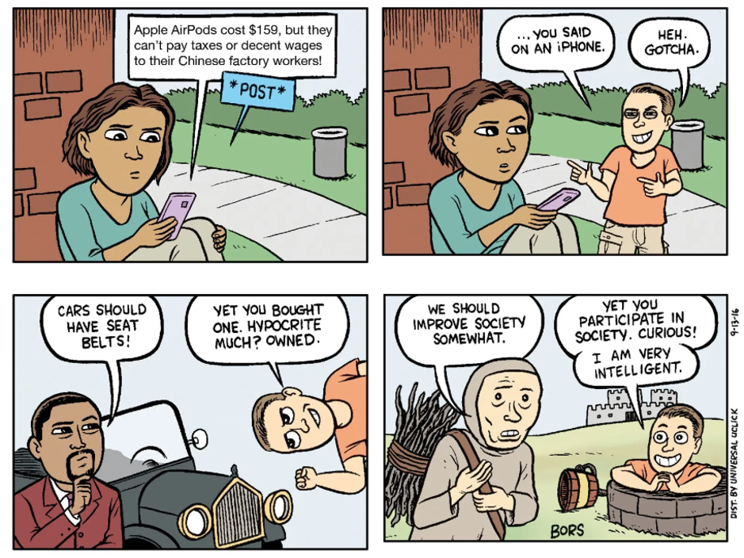
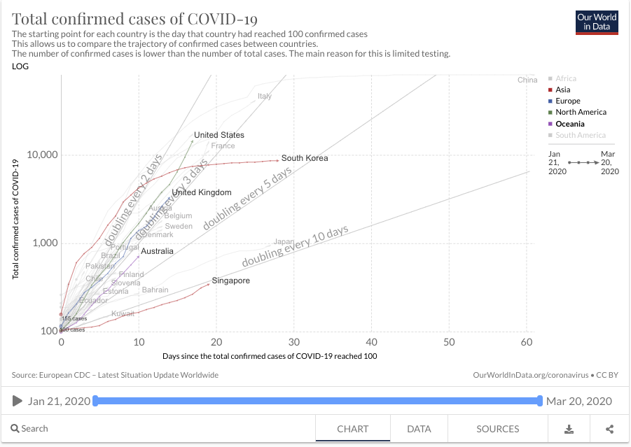

This post is a direct response and rebuttal to the recent ‘Has the coronavirus panic cost us at least 10 million lives already?’ by Paul Fritjers. Paul’s post takes the current covid-19 crisis, and uses some haphazard multiplication to create an alarming narrative, muddying the policy waters on a critical issue.
Initially, I took issue with the back-of-the-envelope way Paul’s post calculates the human cost of an economic downturn. Of course, if you’re willing to make up numbers, you can win any argument, but that doesn’t make it true. To pick one example, the post says that a 25% drop in global share prices means an erasure of 25% of wealth for all humans, effectively costing “1.2 billion Indians a quarter of their wealth”. Except that most Indians would have almost no savings (wealth), fewer still would be exposed to global equity markets, and as for income, over 80% of Indians work in the informal sector. Another example: Paul’s post estimates that covid-19 will cost the global economy $50 trillion, based on simply extrapolating a drop in (previously bullish) equity markets. But stock valuations are not the same as output!
I can make up my own numbers too. Let’s say that if left to run, covid-19 infects half the world’s population (an underestimate, by all accounts) and has a mortality rate of 1% (also an underestimate based on existing countries). That’s 38.5 million deaths. Add to my model the fact that, actually, 5% of people will die if they aren’t hospitalised (according to the WHO) and there aren’t enough hospital beds. That’s almost 200 million deaths now (worse than Paul’s 10 million, for sure). Indeed, Australia will run out of hospital beds after only 0.2% of the population is infected with covid-19.
Paul’s post doesn’t argue that we should head straight for the pandemic cliff edge, but it presents sketchy figures without engaging in the complex trade-offs facing individuals and policymakers. It read like an elaborately constructed gotcha. A galaxy brain take searching for maximum provocativeness. And we need better than gotchas at the moment.

In reading Paul’s post, it is hard to know what response people should have instead. The post seems to advocate for minimal changes to behaviour and activity – criticises countries that “clamour for whatever seemed the safe thing” to manage and contain the spread of the SARS-CoV-2 virus.
What is the alternative to doing the safe thing? Should workers hold their nose and step over people collapsing in the street on their way to work? Should people calmly keep their discretionary spending up at the cinema and local cafe, while the hospital down the street shuts down, corridors full of bodies? An economy and a society won’t run like that for long.
Even if you could keep everyone’s chin up, behaving as usual, the health effects of letting a pandemic run will have a massive negative impact on the economy. Studies with robust quantitative models repeatedly and consistently find that epidemics cause recessions. There’s no version of this where the economy keeps chugging along. This model from Warwick McKibbin and Alexandra Sidorenko finds that a generic flu pandemic would cause trillions of dollars of loss from the effects of people getting sick (in other words: any economic downturn isn’t only because of panic and shutdown, it’s also because people are sick!). Letting the pandemic run will not avoid a recession, it will just give you a different recession. No one has the power to maintain the status quo.
There are a whole range of scenarios in between extreme panic and letting the pandemic run its course (but importantly, maintaining the status quo is not one of them!). We’ve seen other countries have put in strict protocols, aided by firm and consistent government communications, to contain and slow the virus. These protocols varied: temperature checks and contact tracing in Singapore, extensive testing of non-symptomatic people in South Korea, or closing schools and social isolation in Hong Kong. They got the virus under control. Many countries, mostly European and anglophone countries, let it run longer – arguably for economic reasons – in a game of chicken. And they seem to blink at the point where hospital capacity becomes overwhelmed. That’s what happened in Italy. And it happened in the UK today, as I write this from Oxford, where Boris Johnson announced a widespread shutdown and a London hospital ran out of ICU beds. In Paul’s post, the UK “take a wider view and be more balanced, and were roundly denounced for it, internally and externally, forcing them into greater panic”.
I disagree: the UK government was not bullied into changing their position. They did so voluntarily after being presented with new modelling that showed the catastrophic consequence of their “wider view”. In the US, California has just ordered any non-essential activities to cease (and requested the assistance of a Navy hospital ship) after they estimated they would have 25 million cases of covid-19. I would rather suffer the economic impact of a containment protocol and “the safe thing to do” over these messier shutdowns!

This graph is supposed to be interactive but Wordpress in its wisdom translates the embed code in a strange way. The graph comes up embedded in the WYSIWYG visual editor but it doesn't show up on being published. If you'd like to interact with the graph – and I expect have it updated for you by Troppo's elves every day before they get their daily teleconference call from Sanda – the graph is supplied interactively here.I definitely agree that mass panic and hoarding is bad. This seems to have hit Australia especially early and especially hard. It harms the people and businesses that are still trying to operate, and is most disruptive for the most vulnerable people. David Siglar looked at the prospect of government rationing in a previous post here. But as with the economic problem; taking no action and trying to preserve the status quo will still lead to mass panic. As Paul says in his post: “There is simply not the political power in anyone’s hands to react much different to the way we have.” You can’t just pretend everything is great, because once bodies pile up in the ICUs, you better believe people will still panic!
I also agree with Paul’s general point about needing to consider “statistical lives”. Too often, policy is made based on immediate and salient effects (the things we observe in front of us), rather than on the total overall impact. Indeed, if someone wants to write a provocative take about statistical lives, there’s an angle on generational inequality: the health burden of covid-19 falls predominantly on older people, but the burden of a recession will largely be borne by gen-X, millenials and younger. But to point out that an economic downturn will cause harm is not particularly provocative (except when framed as an argument against action on covid-19). And it is meaningless to criticise society’s current course of action for causing a downturn when every course of action right now will lead to a downturn.
What we need is calm, rational, and constructive debate around covid-19. That is how to prevent mass panic, and that is also how to make decisions that control and contain the virus. Putting out claims that our response to covid-19 will kill 10 million people doesn’t help anyone respond to the crisis affecting us today. And unless based on sound analysis, it doesn’t even help us understand the long-run impact of what is happening. But it does feed into the churn of extreme takes at both ends of the policy spectrum, fuelling a sense of alarm, anxiety and uncertainty.
There are no good choices. Our governments need to find the least-bad choices, and they need to exhibit control. The trajectory of this crisis – both pandemic and economic – depends so much on what individuals think and how they behave. Public debate should keep this end goal in mind, not search for the best gotcha.
Toby Phillips is a researcher and manager at the Blavatnik School of Government, Oxford University. He usually researches digital economies in developing countries, but is also working on a new project to investigate national policy responses to covid-19. He was previously in the Australian Public Service.
Hi Toby,
nice to meet you, albeit in this virtual fashion.
Let me get it straight what you are saying:
1. You agree a major economic downturn has been caused by the panic and the reaction, though you say a downturn was inevitable.
2. You agree that this downturn is likely to mean millions of lives lost down the line, though you dont think my figures are authoritative but back-of-the-envelope (which the original post already said they were by saying the maths would be imperfect and "a guess").
3. You say 200 million could die if there were no response at all and we took a high range estimate of the fatality risks.
4. You seem to have wanted me to say what should have been done even though I in the post say there was no political alternative and we should learn from this panic to think of future institutions that have a measured health response that avoids the panic.
Agreed? I will respond more in full later, but I will already say a few things.
Most importantly, you put up a totally straw man when you say "What is the alternative to doing the safe thing? " which automatically presumes we have done the safe thing, at the same time as saying "There are no good choices". You cannot claim that what was chosen was the safe thing to do. That is presuming the answer to a complex question you yourself admit is too messy to fully understand, such as the question how a panic could have been avoided.
I am saying tens of millions will die as a result of our choices the last few weeks. You are not really disputing that. To claim that those choices were nevertheless "the safe thing to do" I think is running away from the consequences of those choices. We have killed tens of millions with our panic and we can either lie about that fact, or hide behind some quick mantra that "this was the safe thing", or we can own up to that reality and openly wonder what else we could have done and should have done that would have worked out better on balance. That was the point of the last line of my post, which said "After WWII we set up new economic institutions to prevent the mistakes of 1929 from recurring, ie the self-isolation of whole economies to the loss of all. Let us think what institutions we need to prevent what we are now experiencing." By claiming you already know that what we did what was the safe thing to do you seem to choose head-in-sand, running away from our responsibility.
I will also say you employ some unwarranted tricks in this piece. The model by McKibbin for instance that you cite from was run in 2006, over 10 years ago, for a flu with very different hypothetical characteristics. Its not proof of anything much about this virus in terms of impacts and optimal responses. To say "look, there is a model of something else in which things are dire if you dont do X" is at best a distraction. Those models help see some interrelations that will still be true now, but one cannot lift numbers out of them as if they hold now.
Your claim that the UK government was solely persuaded by modeling is a rather odd view of how policy decisions get made. I dispute that politicians are solely pushed into dramatic action by what comes out of a model without a context in which there are huge political pressures from their society. All the petitions and media hype aimed at the government will have also played a role, incidentally often employing the same presumption about knowing what the "safe thing to do" actually is.
Keeping a cool head is indeed important. Simply assuming that the massive economic disruption that have followed the choices made is "the safe thing to do" is unwarranted, particularly when the basis of that would be modelling of only the immediate health system and not the whole system, which is one of the things we probably need to go to in the future.
Hi Paul, nice to meet you too! I originally started this post as a comment on your piece, but it grew too long.
Yes, you basically have my argument right there. Although I do not think Australia is “doing the safe thing”... if we roughly characterise the “safe thing” as policies that successfully control and contain the virus, then Australia has some way to go yet.
Yes, our choices will cause loss of life and welfare (although tens of millions? who knows). Shutdowns in California and UK will lead to loss of “statistical” life, no doubt! But not shutting down will also lead to loss of life, perhaps more.
What does a new economic institution look like that can deal with this? Surely it is largely about domestic financial systems. The only way to contain a pandemic like this is to stop people coming into contact with each other. Do we want an institution that somehow forces interconnections to continue? That forces people, countries, and firms to carry on, shaking hands and spreading pandemic? I don’t.
Instead, we need institutions that allow us to hit “pause” on the economy. Halting the spread while keeping everyone solvent, and keeping the structure of the economy in tact to pick up after a few weeks. Eg loans to business to keep employees on payroll, or freezing mortgage repayments. Steve Hamilton and Jason Furman have been writing about this in the US. And the UK announced a suite of such policies yesterday.
glad to see I got your argumentation right, which in terms of the "safe thing" I totally disagree with. You dont really engage with my challenge to you to think broadly about the whole of humanity at all when you hide behind a quick-fire definition of "if we roughly characterise the “safe thing” as policies that successfully control and contain the virus,". That is just hiding your head in the sand by defining safe to see loss of life anywhere else as perfectly safe.
I am sorry, but that is deeply irresponsible. It is just immoral to be wilfuly blind to deaths caused by our actions. We cannot hide from what we have just done in that way and it is no basis for thinking about what we should do next or in the far future.
I have now responded to the 200 million deaths claim, and the wider question of what the true tradeoff is likely to have been here:
http://clubtroppo.lateraleconomics.com.au/2020/03/21/the-corona-dilemma/
I originally aimed to call it "Toby's Dilemma" in response to the ad hominem in Toby's post, but resisted. We should not personalise these important matters.
btw, on the Indian capital markets, the 50 billion, etc., please read my original post a bit more carefully.
In my original post I make clear that I take the percentage loss in the stock markets as indicative of the loss of value of all types of income-generating production factors ("capital"). This includes human capital and the equity not traded on stock markets.
Poor Indians wont have stocks, but they have human capital and the loss of 25% in the Nifty 50 (one of the main indices) spells bad news for their expected income streams.
Etc.
I might write another post at some time as to "what we should have done". Its an important question.Nick Gruen has started putting some thoughts down in his various comments, and so did the previous posts by David. One of my preliminary suggestions was to quickly open national bank accounts for everyone as a means of pumping money through the system and registering the population at the same time.